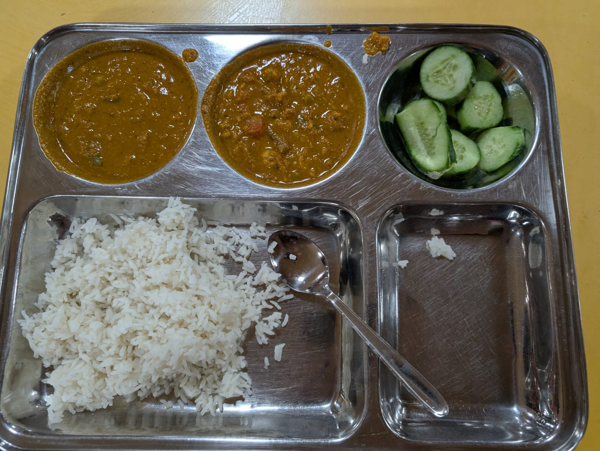
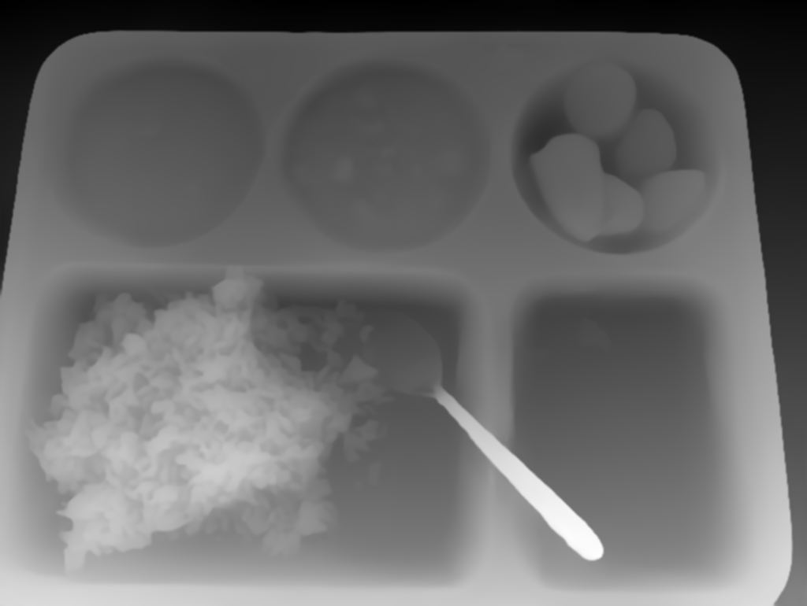
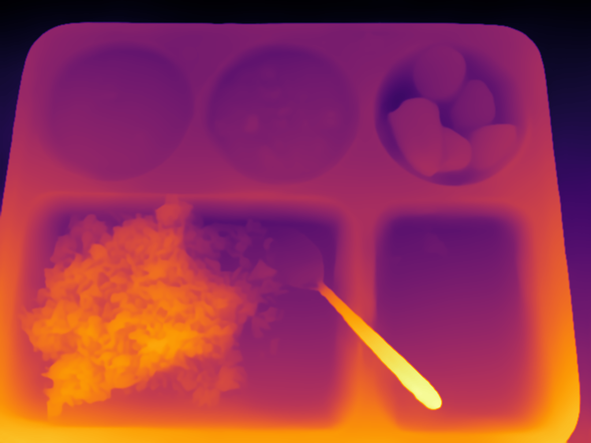
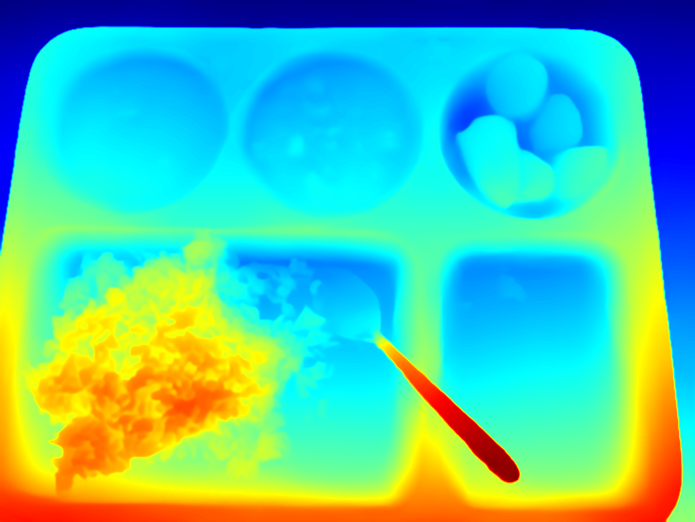
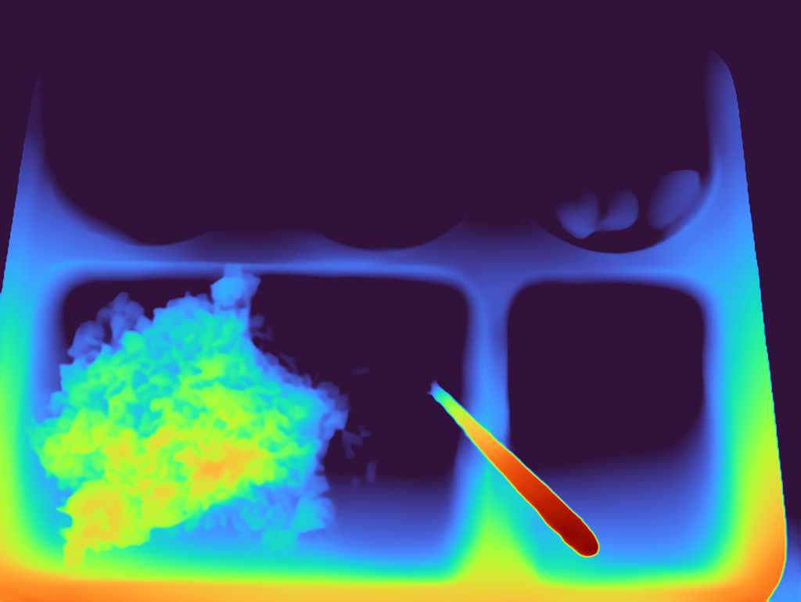
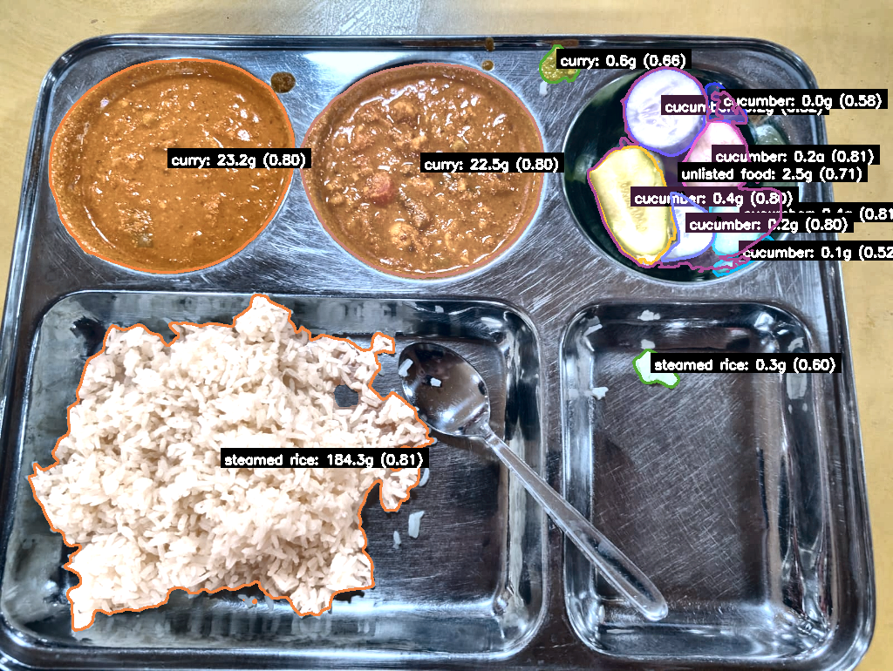

{
"resolution": "1600x1204",
"channels": 3,
"dtype": "uint8",
"expected_items": [
"chapati",
"green salad",
"mix veg",
"steamed rice",
"cake",
"chutney",
"dal"
],
"plate_profile": null,
"debug": true
}





[]
{
"item_id": "steamed rice_1",
"area_pixels": 115671,
"estimated_height_cm": 1.46,
"volume_estimate_ml": 171.1,
"density": 1.077,
"mass_g": 184.3,
"class_label": "steamed rice",
"class_confidence": 0.7938,
"depth_stability": 1.0,
"scale_confidence": 0.7,
"composite_confidence": 0.8149,
"prior_applied": true
}{
"item_id": "steamed rice_2",
"area_pixels": 1370,
"estimated_height_cm": 0.225,
"volume_estimate_ml": 0.3,
"density": 1.033,
"mass_g": 0.3,
"class_label": "steamed rice",
"class_confidence": 0.4339,
"depth_stability": 1.0,
"scale_confidence": 0.7,
"composite_confidence": 0.6025,
"prior_applied": true
}{
"item_id": "cucumber_3",
"area_pixels": 7249,
"estimated_height_cm": 0.05,
"volume_estimate_ml": 0.4,
"density": 0.6,
"mass_g": 0.2,
"class_label": "cucumber",
"class_confidence": 0.9174,
"depth_stability": 0.75,
"scale_confidence": 0.7,
"composite_confidence": 0.8153,
"prior_applied": false
}{
"item_id": "cucumber_4",
"area_pixels": 4741,
"estimated_height_cm": 0.135,
"volume_estimate_ml": 0.6,
"density": 0.6,
"mass_g": 0.4,
"class_label": "cucumber",
"class_confidence": 0.9132,
"depth_stability": 0.75,
"scale_confidence": 0.7,
"composite_confidence": 0.8134,
"prior_applied": false
}{
"item_id": "cucumber_5",
"area_pixels": 4993,
"estimated_height_cm": 0.05,
"volume_estimate_ml": 0.3,
"density": 0.6,
"mass_g": 0.2,
"class_label": "cucumber",
"class_confidence": 0.9032,
"depth_stability": 0.75,
"scale_confidence": 0.7,
"composite_confidence": 0.809,
"prior_applied": false
}{
"item_id": "cucumber_6",
"area_pixels": 9058,
"estimated_height_cm": 0.072,
"volume_estimate_ml": 0.7,
"density": 0.6,
"mass_g": 0.4,
"class_label": "cucumber",
"class_confidence": 0.8855,
"depth_stability": 0.75,
"scale_confidence": 0.7,
"composite_confidence": 0.801,
"prior_applied": false
}{
"item_id": "cucumber_7",
"area_pixels": 2740,
"estimated_height_cm": 0.106,
"volume_estimate_ml": 0.3,
"density": 0.6,
"mass_g": 0.2,
"class_label": "cucumber",
"class_confidence": 0.8753,
"depth_stability": 0.75,
"scale_confidence": 0.7,
"composite_confidence": 0.7964,
"prior_applied": false
}{
"item_id": "curry_8",
"area_pixels": 53282,
"estimated_height_cm": 0.375,
"volume_estimate_ml": 20.3,
"density": 1.11,
"mass_g": 22.5,
"class_label": "curry",
"class_confidence": 0.7734,
"depth_stability": 1.0,
"scale_confidence": 0.7,
"composite_confidence": 0.8044,
"prior_applied": true
}{
"item_id": "curry_9",
"area_pixels": 54250,
"estimated_height_cm": 0.381,
"volume_estimate_ml": 20.9,
"density": 1.11,
"mass_g": 23.2,
"class_label": "curry",
"class_confidence": 0.7663,
"depth_stability": 1.0,
"scale_confidence": 0.7,
"composite_confidence": 0.8007,
"prior_applied": true
}{
"item_id": "curry_10",
"area_pixels": 1461,
"estimated_height_cm": 0.375,
"volume_estimate_ml": 0.6,
"density": 1.11,
"mass_g": 0.6,
"class_label": "curry",
"class_confidence": 0.519,
"depth_stability": 1.0,
"scale_confidence": 0.7,
"composite_confidence": 0.659,
"prior_applied": true
}{
"item_id": "cucumber_11",
"area_pixels": 1512,
"estimated_height_cm": 0.05,
"volume_estimate_ml": 0.1,
"density": 0.6,
"mass_g": 0.0,
"class_label": "cucumber",
"class_confidence": 0.4688,
"depth_stability": 0.75,
"scale_confidence": 0.7,
"composite_confidence": 0.5828,
"prior_applied": false
}{
"item_id": "cucumber_12",
"area_pixels": 1184,
"estimated_height_cm": 0.147,
"volume_estimate_ml": 0.2,
"density": 0.6,
"mass_g": 0.1,
"class_label": "cucumber",
"class_confidence": 0.3663,
"depth_stability": 0.75,
"scale_confidence": 0.7,
"composite_confidence": 0.5152,
"prior_applied": false
}{
"item_id": "unlisted food_13",
"area_pixels": 34018,
"estimated_height_cm": 0.073,
"volume_estimate_ml": 2.5,
"density": 1.0,
"mass_g": 2.5,
"class_label": "unlisted food",
"class_confidence": 0.6921,
"depth_stability": 0.75,
"scale_confidence": 0.7,
"composite_confidence": 0.7081,
"prior_applied": false
}

{
"food_items": [
{
"name": "steamed rice",
"volume_ml": 171.1,
"mass_g": 184.3,
"calories": 239.6,
"protein": 5.0,
"carbs": 51.6,
"fat": 0.6,
"confidence": 0.8149,
"class_label": "steamed rice",
"class_confidence": 0.7938,
"top_k": [
{
"label": "steamed rice",
"confidence": 0.7938,
"raw_similarity": 0.7938
}
],
"identification_status": "recognized",
"menu_match": true,
"matched_menu_item": "steamed rice",
"identification_confidence": 0.7938,
"segmentation_confidence": 0.7938,
"association_confidence": 1.0,
"menu_match_confidence": 1.0,
"depth_confidence": 1.0,
"scale_confidence": 0.7
},
{
"name": "steamed rice",
"volume_ml": 0.3,
"mass_g": 0.3,
"calories": 0.4,
"protein": 0.0,
"carbs": 0.1,
"fat": 0.0,
"confidence": 0.6025,
"class_label": "steamed rice",
"class_confidence": 0.4339,
"top_k": [
{
"label": "steamed rice",
"confidence": 0.4339,
"raw_similarity": 0.4339
}
],
"identification_status": "recognized",
"menu_match": true,
"matched_menu_item": "steamed rice",
"identification_confidence": 0.4339,
"segmentation_confidence": 0.4339,
"association_confidence": 1.0,
"menu_match_confidence": 1.0,
"depth_confidence": 1.0,
"scale_confidence": 0.7
},
{
"name": "cucumber",
"volume_ml": 0.4,
"mass_g": 0.2,
"calories": 0.0,
"protein": 0.0,
"carbs": 0.0,
"fat": 0.0,
"confidence": 0.8153,
"class_label": "cucumber",
"class_confidence": 0.9174,
"top_k": [
{
"label": "cucumber",
"confidence": 0.9174,
"raw_similarity": 0.9174
}
],
"identification_status": "unlisted",
"menu_match": false,
[
{
"step": "Input",
"message": "Original image saved",
"params": {
"resolution": "1600x1204"
},
"elapsed_s": 0.228,
"input_file": null,
"output_file": "original.png",
"timestamp": "2026-11-09T18:47:05.981557"
},
{
"step": "Pipeline",
"message": "Step 1 — Preprocessing & Perspective Warp",
"params": {},
"elapsed_s": null,
"input_file": null,
"output_file": null,
"timestamp": "2026-11-09T18:47:05.982837"
},
{
"step": "Quality Gate",
"message": "PASS",
"params": {
"blur_score": 351.14,
"tilt_deg": 25.0
},
"elapsed_s": null,
"input_file": null,
"output_file": null,
"timestamp": "2026-11-09T18:47:06.346574"
},
{
"step": "Preprocessing",
"message": "Resize applied",
"params": {
"original": "1600x1204",
"target_long_edge": 1024,
"scale": 0.64
},
"elapsed_s": 0.0092,
"input_file": null,
"output_file": "01_resized.png",
"timestamp": "2026-11-09T18:47:06.641001"
},
{
"step": "Preprocessing",
"message": "Gaussian blur applied",
"params": {
"kernel": 5
},
"elapsed_s": 0.0049,
"input_file": null,
"output_file": "02_denoised.png",
"timestamp": "2026-11-09T18:47:06.772330"
},
{
"step": "Preprocessing",
"message": "LAB color normalization applied",
"params": {},
"elapsed_s": 0.369,
"input_file": null,
"output_file": "03_color_normalized.png",
"timestamp": "2026-11-09T18:47:07.223271"
},
{
"step": "Preprocessing",
"message": "CLAHE contrast enhancement applied",
"params": {
"clip_limit": 2.0,
"tile_grid": "8x8"
},
"elapsed_s": 0.0256,
"input_file": null,
"output_file": "04_contrast_enhanced.png",
"timestamp": "2026-11-09T18:47:07.322986"
},
{
"step": "Preprocessing",
"message": "Canny edge detection",
"params": {
"low": 50,
"high": 150
},
"elapsed_s": 0.| Step | Message | Params | Time |
|---|---|---|---|
| Input | Original image saved | {"resolution": "1600x1204"} | 0.2280s |
| Pipeline | Step 1 — Preprocessing & Perspective Warp | — | — |
| Quality Gate | PASS | {"blur_score": 351.14, "tilt_deg": 25.0} | — |
| Preprocessing | Resize applied | {"original": "1600x1204", "target_long_edge": 1024, "scale": 0.64} | 0.0092s |
| Preprocessing | Gaussian blur applied | {"kernel": 5} | 0.0049s |
| Preprocessing | LAB color normalization applied | — | 0.3690s |
| Preprocessing | CLAHE contrast enhancement applied | {"clip_limit": 2.0, "tile_grid": "8x8"} | 0.0256s |
| Preprocessing | Canny edge detection | {"low": 50, "high": 150} | 0.0204s |
| Preprocessing | Warp skipped (no 4-pt contour) | {"warped": false} | — |
| Preprocessing | Complete | {"output_size": "1024x770"} | 1.4183s |
| Pipeline | Step 2 — Compartments & Scale | — | — |
| Compartment Detection | Detected 0 compartments | {"min_area_frac": 0.02, "max_area_frac": 0.9, "compartment_count": 0} | 0.0182s |
| Scale Calibration | Fallback to bbox-based calibration | {"cm_per_pixel": 0.03559, "method": "bbox"} | — |
| Compartment Detection | Scale computed | {"cm_per_pixel": 0.03559, "pixel_area_cm2": 0.00126671, "compartments": 0, "scale_confidence": 0.7} | 0.0839s |
| Pipeline | Step 3 — Depth Estimation | — | — |
| Depth Estimation | Depth Anything depth map computed (smoothed) | {"device": "0", "shape": [770, 1024], "min": 0.549, "max": 5.515} | 14.1858s |
| Depth Normalization | Baseline subtracted from depth | {"baseline": 2.539} | 0.0067s |
| Depth Normalised [0-1] | Relative depth map normalised to [0,1] | {"cm_per_pixel": 0.03559, "image_width_px": 1024, "max_raw_val": 2.9753} | 0.0021s |
| Depth Estimation | Complete | — | 14.2746s |
| Pipeline | Step 4–6 — SAM 3 Food Identification & Segmentation | — | — |
| SAM3 | Identified 13 food items (2 recognized, 8 unlisted, 3 uncertain) | — | 23.6973s |
| Pipeline | Step 7 — Volume & Mass Estimation | — | — |
| Volume Estimation | Computed mass for 13 items | {"total_items": 13} | 0.0459s |
| Pipeline | ✅ Pipeline complete | {"total_food_items": 13, "avg_confidence": 0.7325, "scale_method": "bbox"} | 39.9240s |